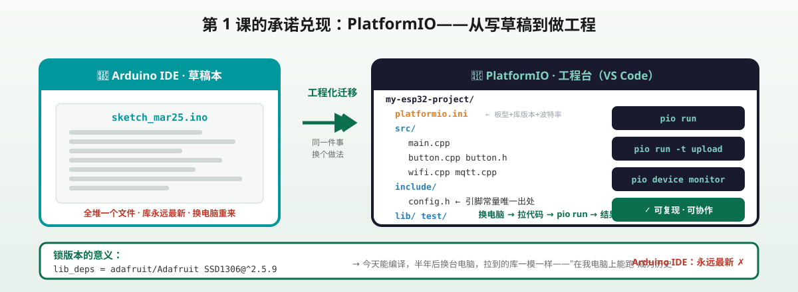

阶段五 · 进阶专家 ｜ 难度：★★★★☆ ｜ 预计用时：50–60 分钟
本课材料：电脑（Windows/macOS/Linux 均可）、第 2–12 课任意一个能跑的项目代码 无硬件替代：PlatformIO 自带仿真支持；本课重点在"工程结构"，无板也能全程学习

你将把一个 300 行的 .ino 草稿，改造成一个"正经工程"：代码拆成多个文件、依赖库锁死版本、一条命令编译上传、换台电脑（甚至换操作系统）打开照样能跑——并且你会看到第 1 课承诺的这一刻：
第 1 课原话：（进阶读者问：PlatformIO 和 ESP-IDF 呢？）
——PlatformIO 在第 12 课之后的进阶篇介绍……
兑现时刻。 从这一课起，你不再是"Arduino 玩家"，开始成为"嵌入式工程师"。
本课学习目标（完成后你将拥有）：
src/ include/ lib/ platformio.iniplatformio.ini 锁定板型与库版本——"在我电脑上能跑"成为历史先公道地说：Arduino IDE 教会了你一切，它没有错——它就是为"10 分钟点亮 LED"设计的。但项目一大，它的问题逐一浮出：
| 痛点 | Arduino IDE 的现状 | PlatformIO 的答案 |
|---|---|---|
| 代码全堆一个 .ino | 文件一长找不到东西 | src/ 多文件拆分，.h 声明 + .cpp 实现 |
| 库装了什么版本？ | 装最新，别人复现不了 | lib_deps 锁死版本号 |
| 换台电脑能编译吗 | 要手动装板卡包、库…… | platformio.ini 一行拉起全部依赖 |
| 调试输出 | 串口监视器看文本 | Plotter 直接画曲线（第 3 课的梦想） |
| 测试 | 没有 | Unity 单元测试，纯逻辑不用板子 |
| 编辑器 | 简易编辑器 | VS Code：跳转、补全、重构、Git |
💡 一句话定位： Arduino IDE = 草稿本（验证想法最快）； PlatformIO = 工程台（管理复杂度的工具）。 两者不互斥——第 3~12 课你在草稿本上验证了所有想法，现在把它们搬上工程台。先跑通，再工程化——顺序不能反（直接上 PIO 会让新手卡在环境配置里，这是无数人弃坑的原因）。
pio init --ide vscode 生成（或手动创建）的骨架：
my-esp32-project/
├── platformio.ini ← 📋 工程的灵魂：板型、库、选项全在这
├── src/
│ ├── main.cpp ← 相当于原来的 .ino（setup/loop）
│ ├── led.h ← 模块声明
│ └── led.cpp ← 模块实现
├── include/
│ └── config.h ← 全局常量（引脚、Wi-Fi 账号）
├── lib/ ← 私有库（自己写的可复用模块放这）
├── test/ ← 单元测试
└── .pio/ ← 构建产物（自动生成，提交时忽略）
三个目录的分工，背下来：
src/：你的代码。拆分原则：一个功能模块一对 .h/.cpp（led、wifi、mqtt、sensor……）include/：全局头文件。所有引脚号、账号密码只在这出现一次——第 1 课就强调"常量集中管理"，现在有了物理上的专属位置lib/：你自己写的、想跨项目复用的库（比如把第 10 课防抖状态机打包进去）platformio.ini——整个工程的"一句话配置"[env:esp32dev]
platform = espressif32
board = esp32dev
framework = arduino
monitor_speed = 115200
lib_deps =
adafruit/Adafruit SSD1306@^2.5.9
adafruit/Adafruit BMP280@^2.6.8
knolleary/PubSubClient@^2.8
逐行拆解（这 7 行是本课最重要的代码）：
[env:esp32dev] 环境名——一个文件可以定义多个环境（esp32/esp8266/板A/板B）
platform 平台包：自动下载 ESP32 工具链（编译器、烧录工具）
board 板型：等价于 Arduino IDE 的"工具→开发板"
framework 框架：用 Arduino 写法（第 14 课会加一个 esp-idf 框架对比）
monitor_speed 串口监视器波特率：115200（不用每次手点）
lib_deps 📌 库名@版本号——**锁版本的核心**
@^2.5.9 的含义：接受 2.5.9 及以上、但不到 3.0.0 的更新（语义化版本的"兼容补丁"）。锁版本解决的是"依赖地狱"：你今天 pio run 成功，半年后换台电脑——拉到的库版本一模一样，编译结果一模一样。这是 Arduino IDE 完全做不到的（它永远拉最新，新版本一改 API 你的旧项目就崩了）。
📌 工程第一铁律：
platformio.ini必须和代码一起提交进 Git。它是"这台机器如何复现构建"的唯一说明书。
把第 10 课的防抖逻辑拆成模块，这是"从草稿到工程"的核心动作：
include/config.h（全局常量，唯一出处）：
#pragma once // 防止头文件被重复包含（记住这个咒语）
const int LED_PIN = 4;
const int BTN_PIN = 23;
const unsigned long DEBOUNCE_MS = 25;
src/button.h（声明：有什么）：
#pragma once
void pollButton(); // 只报函数名，不写实现
src/button.cpp（实现：怎么做）：
#include "button.h"
#include <Arduino.h>
#include "config.h"
static int lastRaw = HIGH; // static = 模块私有，别人看不见
static int stableState = HIGH;
static unsigned long lastChange = 0;
void pollButton() {
int raw = digitalRead(BTN_PIN);
if (raw != lastRaw) { lastRaw = raw; lastChange = millis(); }
if (millis() - lastChange >= DEBOUNCE_MS && raw != stableState) {
stableState = raw;
if (stableState == LOW) digitalWrite(LED_PIN, !digitalRead(LED_PIN));
}
}
src/main.cpp（主程序瘦成骨架）：
#include <Arduino.h>
#include "config.h"
#include "button.h"
void setup() {
pinMode(LED_PIN, OUTPUT);
pinMode(BTN_PIN, INPUT_PULLUP);
Serial.begin(115200);
}
void loop() {
pollButton(); // 防抖模块
// mqtt.loop(); // 以后：每个模块一行，主循环永远清爽
}
拆分的三条规矩（新手最常问的"什么时候拆"）：
.h 只放"别人需要知道的"：函数原型、常量、结构体；变量实现藏进 .cpp 加 static——接口与实现分离，这就是封装。#pragma once 放头文件第一行——防止重复包含的编译错误（redefinition 报错的解药）。注意一个坑：PlatformIO 里主文件必须叫 main.cpp 且 #include <Arduino.h>（.ino 的自动 include 特性没有了）——这是从 IDE 迁移的第一大报错来源（见报错表）。
Step 1：装环境
Espressif ESP32 Dev Module → Framework 选 Arduino → 创建Step 2：迁移代码
src/main.cpp，第一行加 #include <Arduino.h>config.h / button.cpp / bt.cpp（蓝牙模块）lib_deps 里加上你用的库（第 10 课只有自带 BluetoothSerial，lib_deps 可以为空——自带库不用写）Step 3：构建上传
底部状态栏：✓ Build（编译） → ✓ Upload（烧录） → 🖥 Monitor（串口）
或者终端敲（这三个命令背下来，以后全靠它们）：
pio run # 编译
pio run -t upload # 编译并上传
pio device monitor # 串口监视器（115200 来自 ini）
看到绿色 SUCCESS + 监视器里熟悉的蓝牙启动日志——迁移完成。 同样的代码、同样的行为，但它现在是一个工程了。
第 3 课你用 Arduino IDE 的绘图器看过呼吸曲线——PlatformIO 的绘图器更强大（能同时画多条、能导出 CSV）：
// 在 loop 里打印 CSV 格式（逗号分隔 = 多条曲线）
Serial.print(analogRead(34)); // 电位器原始值
Serial.print(",");
Serial.println(millis() % 1000); // 附加一条参考线
pio device monitor 打开 → 点右上角波形图标 → 实时曲线。第 8 课挑战 4 收集的"传感器噪声证据"，现在可以直接画出来看抖动幅度——把数据变成图，是工程师和玩家的分水岭。
[env:esp32dev] platform = espressif32 ← 自动下载工具链 board = esp32dev ← 顶"开发板菜单" framework = arduino ← 用 Arduino 写法 monitor_speed = 115200 ← 顶"手选波特率" lib_deps = adafruit/Adafruit SSD1306@^2.5.9 ← 锁版本，永不翻车
核心差异不在"哪个更快"，而在可复现：Arduino IDE 的环境是"你这台电脑的状态"，PlatformIO 的环境是"platformio.ini 里写明的契约"——后者才能交给团队、写进 CI、留给半年后的自己。
上图是完整工作流与 Arduino IDE 的对照：写 → build → upload → monitor 四步在 PlatformIO 里如何对应，以及 platformio.ini 如何"一行顶十步"。
src/main.cpp，第一行有 #include <Arduino.h>config.h + button.cpp），编译通过platformio.ini 里 monitor_speed = 115200 生效，pio device monitor 直接出日志（不用手选波特率）lib_deps 至少实践一次：加一个第三方库（如 PubSubClient@^2.8）并锁版本.h 和 .cpp 分别放什么 ③为什么要锁库版本platformio.ini 已提交，.pio/ 已加入 .gitignore全部打勾 → 你拥有了管理任意规模项目的能力。下一课，深入它下面的那一层。
wifi.cpp / mqtt.cpp / button.cpp 三个模块——体会"每个模块一行调用"的主循环。platformio.ini 再加一个 [env:esp32s3]，同一份代码切换编译到另一块板——体验"一份代码，多块板"。lib/，在 test/ 写 test_main.cpp 断言 1013.25 hPa → ≈0 米，跑 pio test——不用板子也能测逻辑，这是工程化的标志性能力。lib_deps 的 ^ 去掉改成 @2.5.9（精确锁死），对比两种写法——理解"兼容更新"与"完全冻结"的取舍。platformio.ini 从零构建——记录哪些东西是"ini 自动搞定的"（工具链、板卡包、库），哪些还要手动（VS Code、PIO 插件本身）。这份"复现清单"就是工程化的意义。| 现象 / 报错关键词 | 原因 | 解决办法 |
|---|---|---|
'Arduino.h' file not found |
main.cpp 忘了 include（.ino 时代的自动习惯） | 文件第一行加 #include <Arduino.h> |
setup/loop was not declared |
函数写在了 .cpp 但没声明 / 写错文件 | 确认 setup() loop() 在 src/main.cpp 里 |
redefinition of ... |
头文件没加 include guard | 头文件第一行 #pragma once |
| 首次构建疯狂下载工具链卡住 | 首次要下载数 GB 工具链（正常） | 等待；或配置国内镜像（见社区教程） |
Unable to find device 上传失败 |
COM 口被占用 / 驱动问题 | 关掉串口监视器再上传；重插 USB；装 CH340/CP2102 驱动 |
LDF: library not found |
lib_deps 库名写错 |
名字从库管理器页复制，含作者名 author/Name@ver |
| 编译器报奇怪的模板错误 | 库版本和 framework 不匹配 | 锁版本后重装：删 .pio/libdeps 重新构建 |
.pio 文件夹巨大被误提交 |
没忽略构建产物 | .gitignore 加 .pio/ |
| monitor 打开是乱码 | 波特率不是 115200 | monitor_speed = 115200 写进 ini（别手动选） |
| 从 .ino 迁移后中文注释乱码 | 文件编码不是 UTF-8 | VS Code 右下角编码 → Save with Encoding → UTF-8 |
PlatformIO 让你"更舒服地写 Arduino"——但 Arduino 框架本身是一层翻译：它把你的 digitalWrite 翻译成真正的寄存器操作。第 14 课：ESP-IDF——官方工业级框架：你会掀开 Arduino 的盖子，看 Espressif 官方 SDK 长什么样——gpio_set_level() 直接操作硬件、FreeRTOS 任务取代 loop、组件化构建。同一颗灯，两种世界观各写一遍；你会明白什么项目该用 Arduino（快速验证），什么该上 ESP-IDF（产品量产）——第 1 课埋的"工业级框架"伏笔，届时正式回收。
本课程系列：从点亮一盏灯，到设计一台会自己思考的机器。